For Once and for All: What Is a Ruff on the Drums?
Posted on July 3, 2022

One of the biggest things I seem to complain about is how drummers can’t seem to agree on what to call a lot of the stuff we play. Six Stroke Roll, Bonham Triplets, Metric Modulation… these terms could mean several different things depending on who’s using them and what the context is.
The worst casualty of this foible has to be the Ruff. Not many drummers in this day and age use the term ruff, let alone know what exactly it’s supposed to mean.
I first heard of the ruff in the context of a “four–stroke ruff”. The four–stroke ruff and its related licks (e.g. three–stroke ruff, five–stroke ruff, and seven–stroke ruff) are basically short rolls, played as singles, typically ending with an accented note:
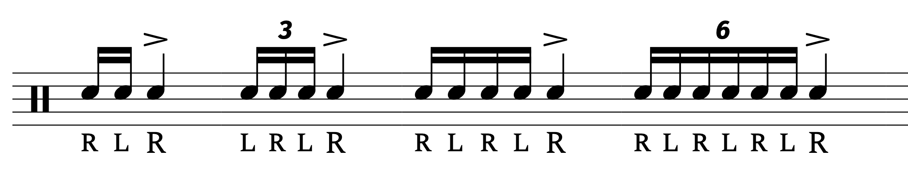Seems simple enough, but I think I’ve seen as many as four other definitions. For some, a ruff is the same as a drag. For others, a ruff is a closed drag. A ruff may also refer to any grace note figure, or sometimes just grace note figures longer than two notes (i.e. longer than a drag).
It’s also worth pointing out that, while ruffs are not on the PAS list of 40, the four–stroke ruff is comparable to the Single Stroke Four off of the list. But the Single Stroke Four does not have any accents, which makes me regard it as a different lick altogether (I guess “accented single stroke four” could be a thing). In drum corps parlance, short single stroke rolls are typically called “single 3”, “single 4”. etc.
So where should we even start? Well, since there’s enduring confusion regarding the distinction between the ruff and the drag, let’s start with the history of these words. It seems like ruff is the older term, first showing up in Warlike Directions by Thomas Fisher. Published in 1643, this is one of the oldest books I know of that gets into any specifics of drumming.
I use that term very loosely because the closest we get to actual notation is this:

Having read the surrounding text, I’ve deciphered the “notation” of what’s supposed to be a march:
- | = right hand stroke
- I = left hand stroke
- r = “full ruffe” (note the spelling)
- 2 = “half ruffe”
The only problem is that the book provides zero explanation as to what a ruffe even is. Considering that the book is describing some sort of march, it’s reasonable to conclude that a ruffe is a short roll. Again, no explanation is given as to how you’re supposed to play it.
Some more concrete details are provided in a document that drum historians call the Douce Manuscript. It’s basically a piece of paper that was found glued to the inside cover of a music book owned by museum curator Francis Douce. The paper (believed to written sometime in the mid to late 1600s and titled “The Grounds of beating ye drum”) has a line that reads something to the effect of “four stroaks beginning easy and ending hard (I) am half Ruffe”. The manuscript also mentions a “Whole Ruffe”, made up of five strokes.
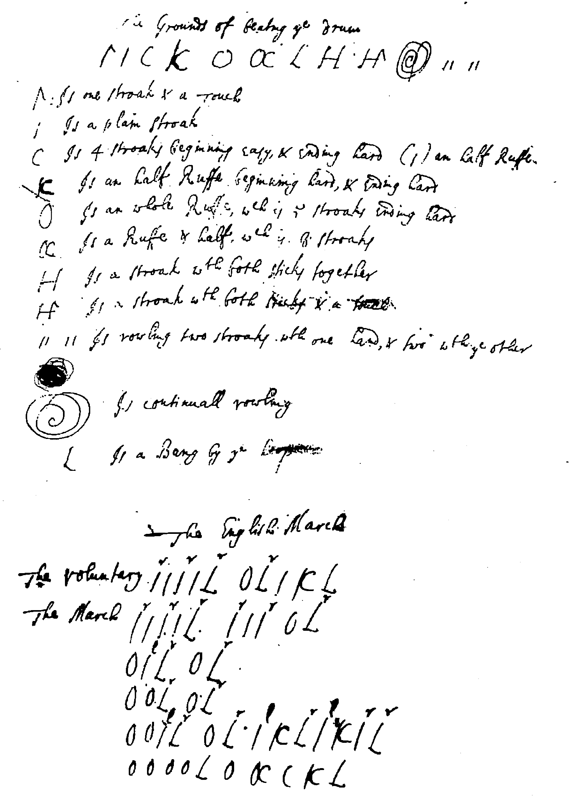It’s anyone’s guess as to what this all actually means, but this is (ostensibly) the earliest written instance that specifically connects the ruff to a short number of strokes. It also mentions the particulars of ending the ruff with an accent.
Since ruff shows up in the mid–1600s, I was curious to find out when the term drag first appears. I used Google Books to search for the oldest use of the word drag (or dragg) in a drumming context, and I found an interesting answer: Regulations for the Prussian Cavalry, published 1757.
Because Regulations for the Prussian Cavalry was originally written in German, it makes me wonder where the word “drag” originally comes from. Is it German in origin, or were the Germans just the first ones to write it down? We may never know.
The book doesn’t have any specifics on how to play the drag, which is pretty typical for books in this period. Printing text with sheet music must’ve been a real pain back in the day, so these books just tell you what the different licks are supposed to mean in a military situation (e.g. drill commands) rather than how you’d actually play them.
The first instance of a drag actually notated apparently comes from The Young Drummer’s Assistant, published in 1785 (note the spelling “dragg”):
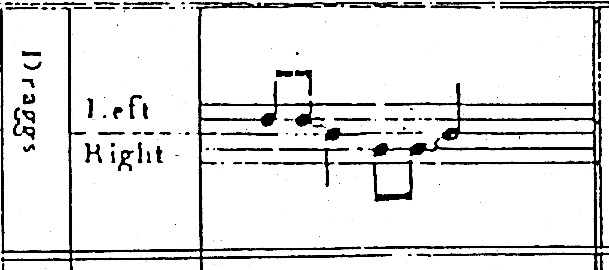I couldn’t find any notation of a ruff before this year. The oldest book I know of that has a ruff notated out is Benjamin’s Clarks Drum Book — look in the bottom right corner and you’ll see what look like early versions of the Single Stroke Four labeled “ruffs”:
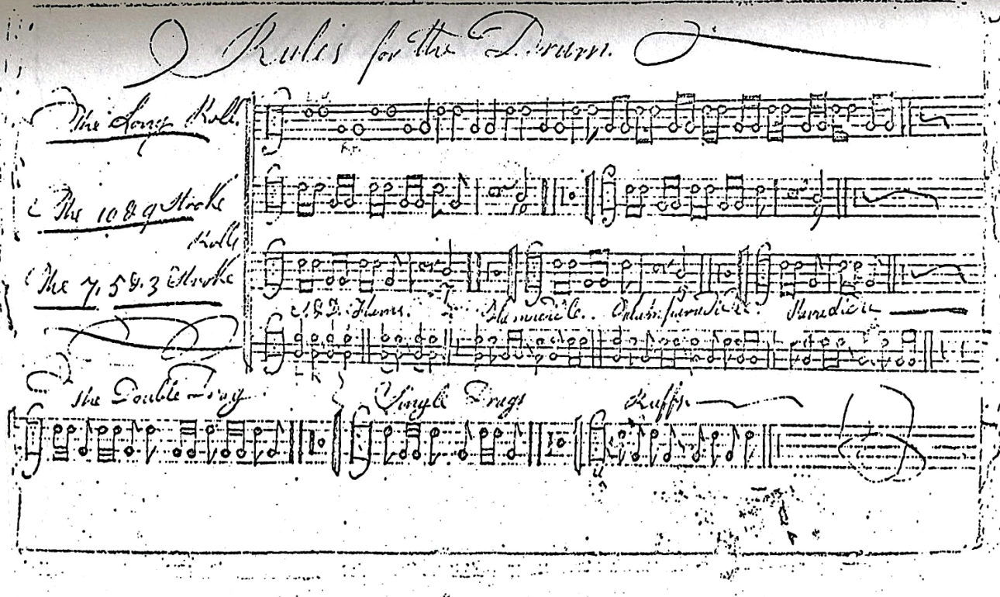In addition, this is probably the first book to have the single drag and the double drag notated, predecessors to the modern Single Drag Tap and Double Drag Tap, respectively.
There’s another book called The Revolutionary War Drummer’s Book that apparently has ruffs, described as “1, 2, 3, 4 quick from hand–to–hand”. I couldn’t find a copy of the book to know for myself, and I’m not sure when it was written — sometime in the late 1700s to early 1800s I guess. Interestingly, the book calls the modern drag a 3 stroke roll. I think several other books from this timeframe do the same.
Drags became increasingly common moving into the 1800s. Charles Ashworth’s A New, Useful, and Complete System of Drum Beating presents four drag licks to the world:
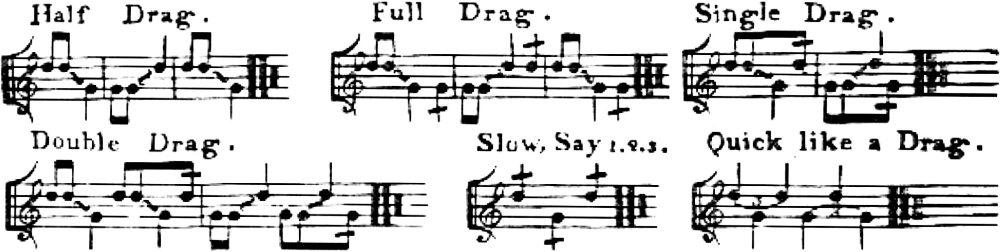Note the antiquated “half drag” and “full drag”. The full drag looks very much like the single drag and (by extention) the modern Single Drag Tap. It’s still possible in this day and age to hear alternating dragged quarter notes called half drags.
Also note “Slow, Say 123” and “Quick Like a Drag”, both of which are comparable to the three–stroke ruff (ICYWW, the slashes through the stems are accents). Meanwhile, the word “ruff” does not appear in the book at all.
In the early 1800s. David Hazeltine’s Instructor in Martial Music reportedly features three and four–stroke “roughs” as well as the single and double drags. I couldn’t find a copy of this one to know how they are notated. I have the same problem with the Massachusetts Collection of Martial Musick . Published around the same time, this book includes a rough, a single drag, and a double drag.
The reason I find this significant is because several rudimental manuals from the 1800s onward include those three licks, written very similarly but with little in the way of explaining how they are different. Take the original NARD list of 26 rudiments:
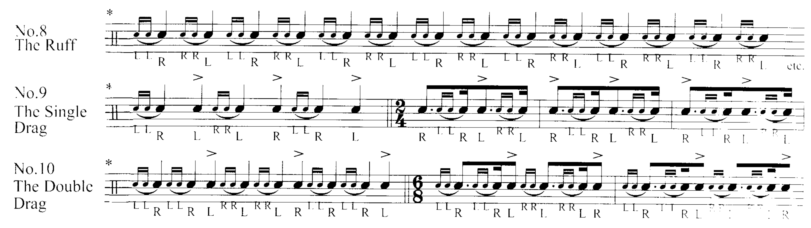It seems like these three licks should be called “The Ruff”, “the Single Ruff”, and “The Double Ruff”. Either that or just use “drag” for all three like the list of 40 does. Why use both? (This isn’t even mentioning how the list of 26 uses “Drag Paradiddle” and not “Ruff Paradiddle”.)
Well, in Elias Howe’s United States Regulation Drum and Fife Instructor (1861), these three licks are presented with similar notation, each in opened and closed styles (i.e. with strict, discrete subdivisions, and as buzzed strokes). The book notes that “it is very difficult and almost impossible to express or designate the Single Drag or Double Drag, when closed.”
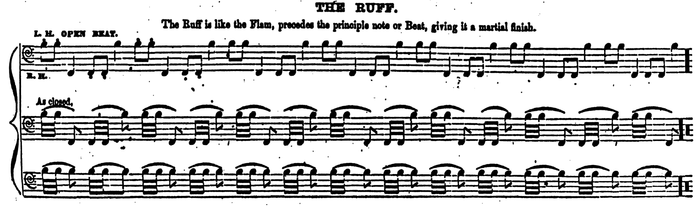 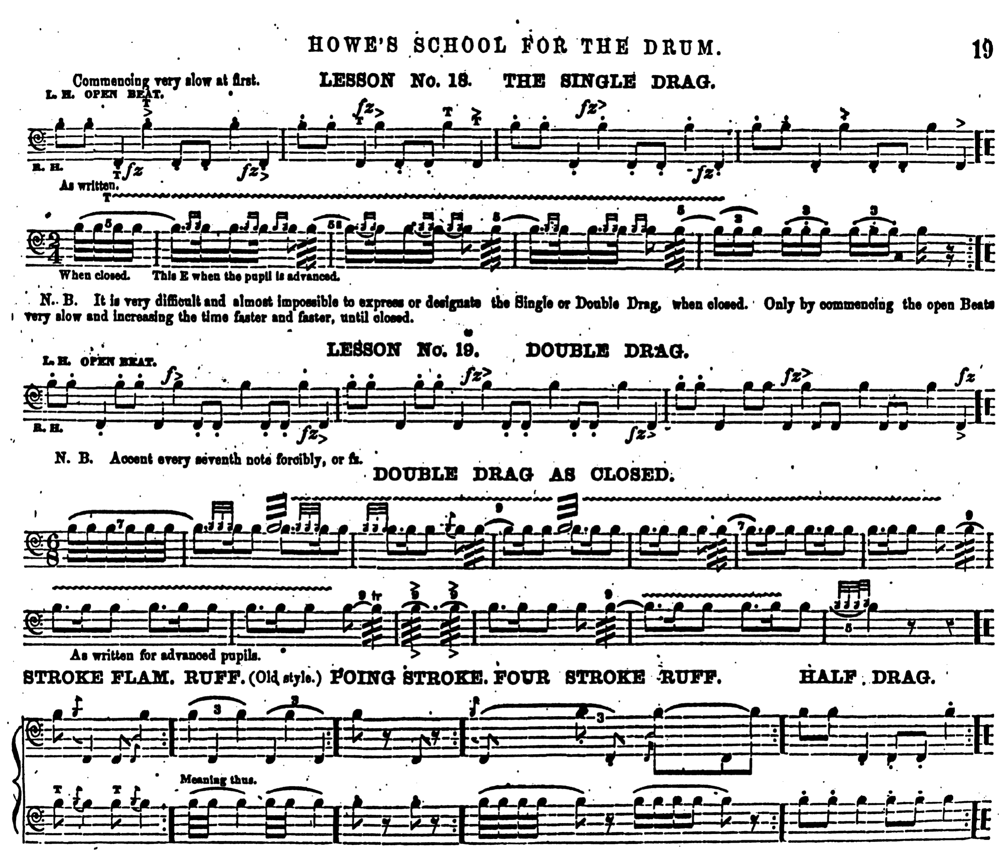This is the first instance I could find of ruffs and drags both notated with grace notes, and it seems to have kicked off the convention of playing ruffs as either being open or closed, while always playing drags as open. Eventually, this evolved into treating ruffs as closed grace note figures and drags as open grace notes figures. See how drag and ruff are used in Safranek’s Complete Instructive Manual for the Bugle, Trumpet, and Drum , 1917:
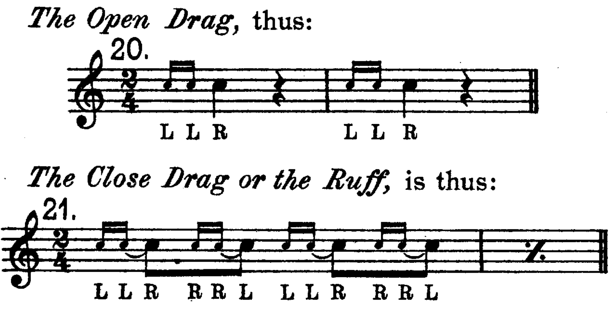In 1861, The Army Drum and Fife Book (Keach, Burditt, and Cassidy) notates ruffs with 32nd notes and a trill marking, the latter of which has historically been used to specify buzzed strokes:
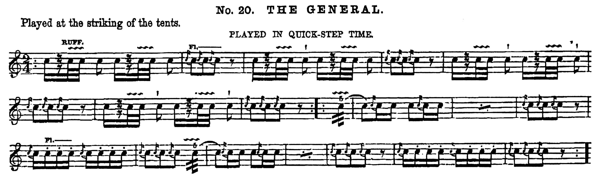George Bruce does something related in 1865’s The Drummer and Fifer’s Guide, while confusingly instructing to “give every tap its distinct sound”:
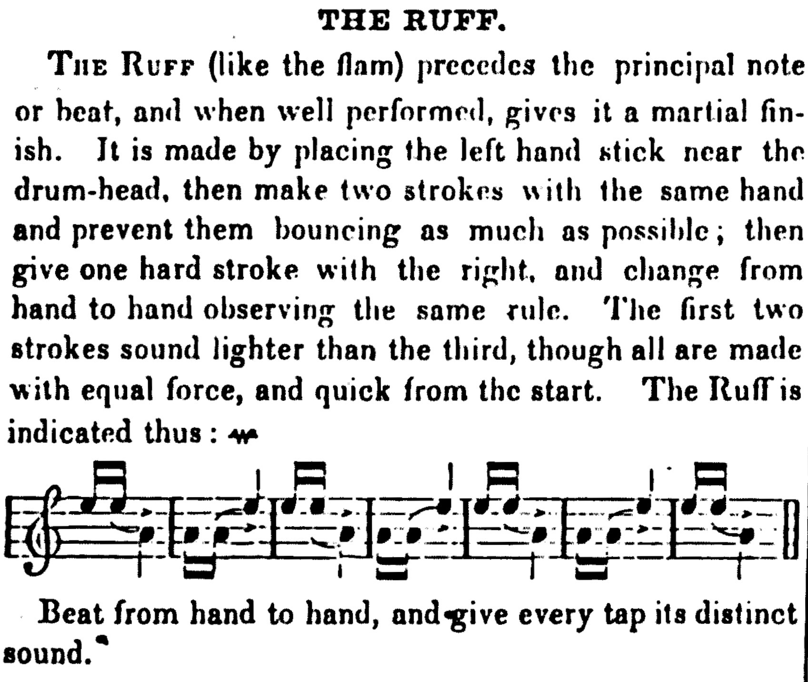Throughout the 1800s, it was still common to see ruff used to describe a short single stroke roll, as in 1853 George Klinhanse’s The Manual of Instruction for Drummers (1853) and William Nevins’ Army Regulations for Drum, Fife, and Bugle (1864):
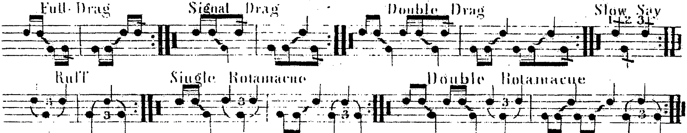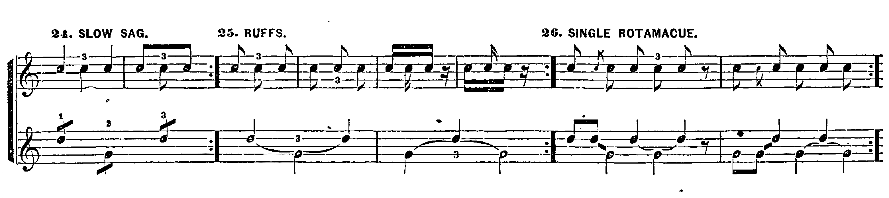
Notice the “Slow Say 123” in Klinehanse (à la Ashworth), and the “Slow Sag” in Nevins.
In Howe’s aforementioned book, he lists a three–stroke ruff (with triplets) as an “Old Style Ruff”, suggesting that, at some point in the 1800s, ruff had its definition changed from using singles to a double and a single (i.e. LLR). Likewise for Bruce, who presents a three–stroke ruff starting on an accent as a “Tap Ruff”. The book states that it’s “seldom used”, again suggesting some shift away from single stroke ruffs towards LLR/RRL ruffs.
Near the end of the century, the confusion become commonplace; Gardiner Strube’s Drum and Fife Instructor in 1869 has the ruff and the drag as being nearly identical with little differentiating them:
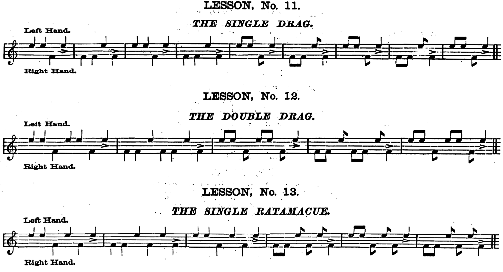Of course, there’re more components to this dilemma. For one, think about what would you call these:
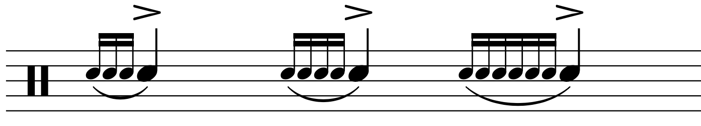Many players in the 21st century would call them ruffs. That would make sense if they were played as singles (indeed, single stroke ruffs can and often are notated with grace notes). But many drummers would call these ruffs regardless of how they’re played, to help differentiate these phrases from flams and drags. One grace note gives us the flam (technically a special grace note called an acciaccatura), two grace notes will give us a drag, so what about three or more grace notes?
I think people want to use ruff in this context, but I feel uneasy about it. What makes a drag a drag isn’t how it’s necessarily written, but how it’s played. Consider this example:
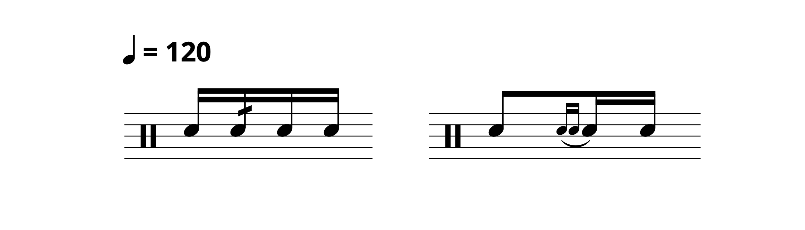If you were to observe the tempo marking, both measures would basically be indistinguishable. I would consider both of them to have drags. As such, I think a ruff should be a ruff based on how it’s played, not how it’s written.
We don’t actually have names for specific grace note patterns. Case in point: a drag to a concert snare drummer would most likely be played buzzed, compared to the open drag of a drum corps player. Both drags could be notated that same — there’s nothing explicitly informing the drummer how to play them, it just depends on the context.
Also, think about what would you call these:
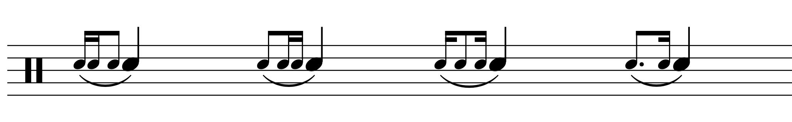They’re not exactly commonplace, but I have seen them. Are they ruffs? Drags? Neither?
Adding to the confusion is the fact that these longer grace note licks are much more likely to be found in the orchestra/concert band world than anywhere else, where they are also likely to be played closed. And if you follow the “ruff = closed” paradigm, you could reasonably consider them to be ruffs of different lengths.
There’s one more wrench to throw in. It’s called the ruffle:
As you can tell, it seems to be built with three stroke ruffs. There’s a good chance the ruffle and the single stroke ruff are related somehow, but I can’t say for sure. All this does is add to the list of licks that are easy to confuse with one another. Wiktionary posits that the word ruff came from ruffle, suggesting that this whole thing starts with the ruffle.
So then… what is a ruff? My best understanding of the original definition is a short roll, but even that requires some extrapolation, and forget about details regarding how you’d play it. I don’t know exactly how, when, or why the ruff was turned into a grace note thing to be synonymous with drag. Maybe at some point, people thought that the single stroke ruff became obsolete, but the word was common enough to be valuable for repurposing. Nonetheless, that doesn’t really explain how we wound up with texts that use “ruff” for some grace note licks and “drag” for others.
This article goes into considerable detail picking apart old drum texts, including the Douce Manuscript, and postulates that the “whole ruffe” or “full ruffe” is the precursor to the modern–day five–stroke roll, while the four–stroke “half ruffe” should be played as a “Stroke and a Drag”, perhaps as something like RLLR, akin to the modern Single Drag Tap or the historic single drag. It’s possible that, throughout history, “whole ruffe/full ruffe” was replaced by the five–stroke roll, while the “half ruffe” was truncated down to just “ruff” with two possible interpretations thanks to the ambiguity of these older texts.
We’re getting into “Wild Mass Guessing” territory now, but if older drummers interpreted the ruff to be built with singles, then they would need a term to refer to the other interpretation. Enter the drag, a word that was either cooked up out of thin air or lifted from another tradition/language.
Here’s the more important question: what should we use in this day and age? The contemporary definition that I find to be the most useful (while still being related to the original) would be a short single stroke roll, probably ending in an accent. Anyone who uses this is properly justified in declaring themselves to be correct thanks to the earliest known instance of a notated ruff.
There’s a historical basis for ruff and drag being synonyms, but we ought to pick one or the other since using both only causes confusion nowadays. Drag is much more ubiquitous in the 21st century thanks to the list of 40, so let’s stick with it. Ditto for “ruff = closed drag”. It’s obviously commonplace to use open and closed to refer to the difference (thankfully, most drummers ignore that dumb sentence on the list of 40 declaring open and closed to mean slow and fast, respectively). It may be helpful in certain situations to use ruff to refer to longer grace note phrases, but as I said earlier, I think this falls apart if you really think about it. That being said… most people don’t.